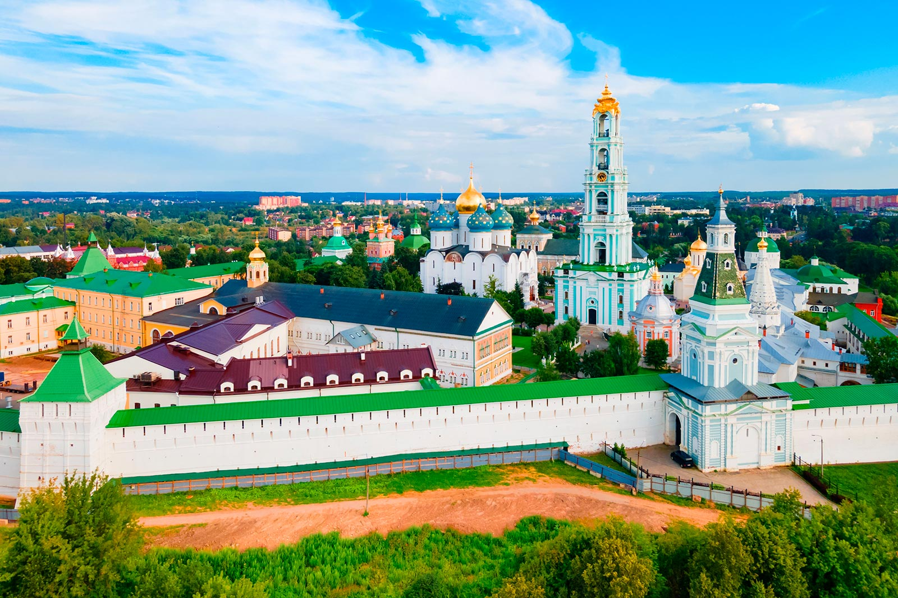

Опираясь на старинные рецепты, мы не стремимся изменить вкус и внешний вид продукции пищевыми добавками.
Качество наших продуктов держится на трех принципах.
Автономная Некоммерческая организация Возрождения Монастырских Традиций Питания «Монастырская Трапеза»
Для перехода к началу нажми ТУТ